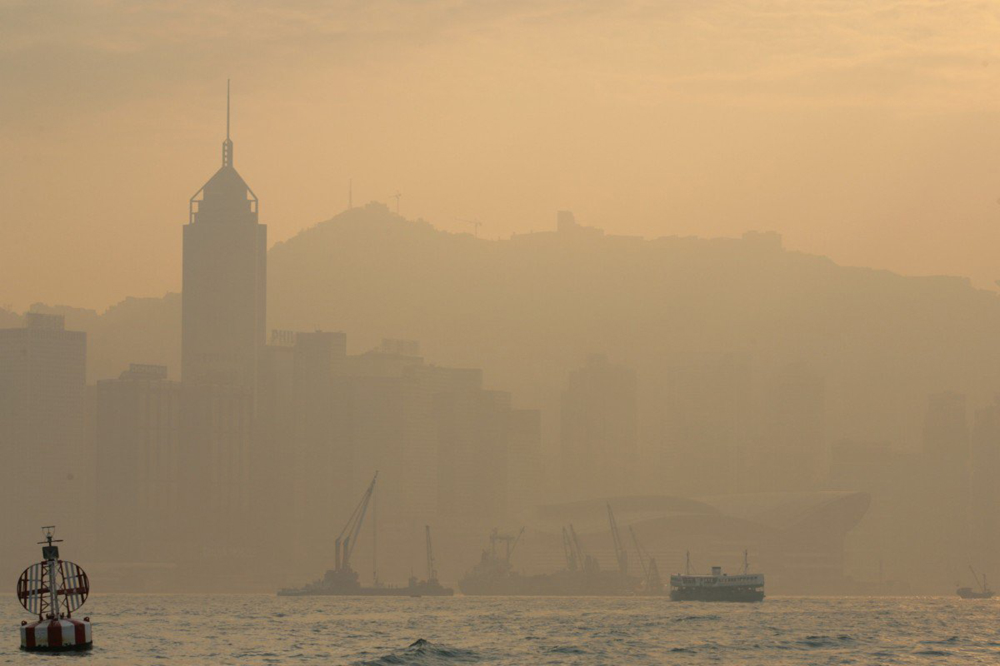
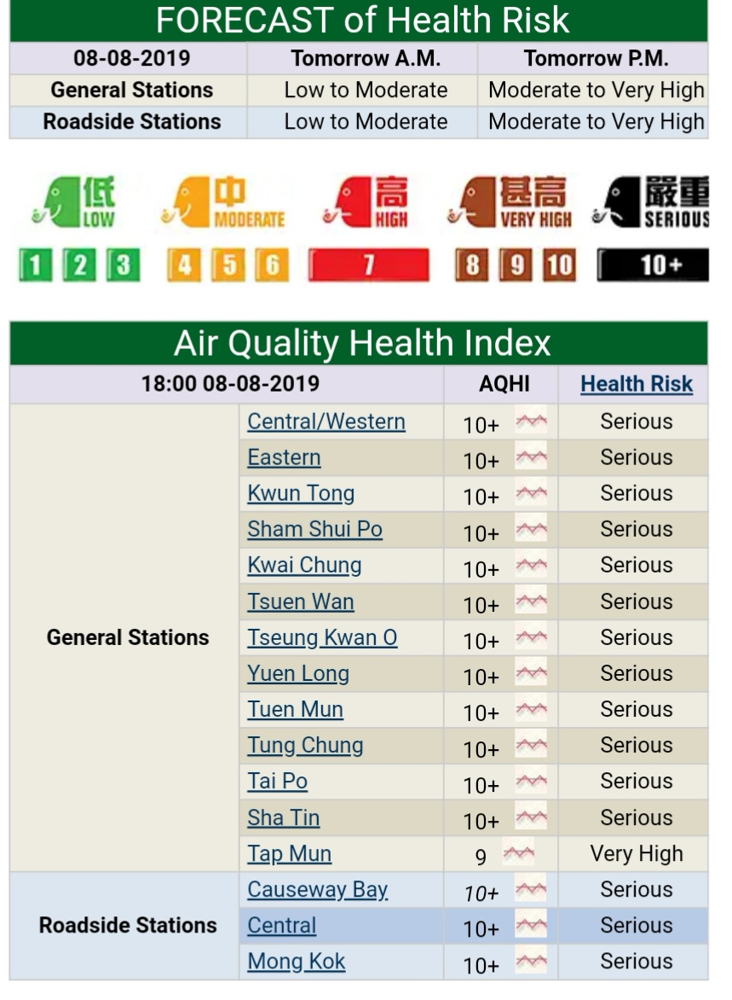

Air pollution is a worrisome topic in Hong Kong. This is affects many people, essentially, anything that uses air the breathe. According to former chief executive Donald Tsang, “The life expectancy in Hong Kong is among the highest in the world… you can come to only one conclusion: we have the most environmentally-friendly place for people, for executives, for Hong Kong people to live.” However, this is not going to be true soon, so we must act on it. “Air pollution levels in HK are extremely high and can affect our lungs, blood vessels, and heart.” (Professor Anthony Hedley, the chair of community medicine in HKU, n.d.)
As you can see from the evidence on this page, you can see that we, as the responsible citizens of Hong Kong, and of the world, must act upon this. You still want to know why, you ask? Everyone will reap what they have sown, which, if we don’t act, will be nothing. With all the pollution now, can we really say that our children, grandchildren, and future generations will be able to enjoy the long lifespan we have now? If we, the people, don’t do anything about it now, what will happen to the future of Hong Kong? 
So, with all this talk about air pollutants and sickness, what is air pollution? Air pollution is a type of substance that makes the air dirty. There are many pollutants, which are chemicals that make the air filthy, as seen in this photo, such as carbon dioxide, carbon monoxide, sulphur dioxide, dust, methane, and many many more. Pollutants have many sources. Cars, factories, air conditioners, and even volcanoes, are all sources of air pollution. There are several forms of air pollution. Greenhouse gasses, smog, and toxic pollutants are all different types of air pollution. Greenhouse gasses include carbon dioxide, nitrous oxide, methane, and nitrous gasses. These gasses come from cars, people exhaling, unwanted products of an experiment, or even cow’s and people’s farts. These gasses then trap the heat around it, and because hot air rises, it rises up to the atmosphere. It continues to trap the hot air and causes global warming. Air pollution is connected to a lot of problems on earth, such as the aforementioned global warming, overpopulation, illnesses, and more. Smog is one of the results of air pollution. Smog is essentially smoke and fog. This is not good because inside smoke are small particles, which can irritate the throat. Once there is more smoke, the particles become larger, and more dangerous. Pollution in general can make certain illnesses worse, such as bronchitis, asthma, emphysema, and possibly cancer. (www.sparetheair.com, n.d.) Certain people are more susceptible to health problems than others, for example, people with heart disease, children under the age of 14, and many others. (www.sparetheair.com, n.d.) People use the air pollution index, also known as AQHI or Air Quality Health Index, to find out how polluted our air is. In this image, we can see the information about the air pollution in Hong Kong. The health index is a scale from low to high, in which low means less air pollution and vice versa. The AQHI is usually reported based on a 1-10, and 10+ system. In this image, it is using a 1-100 scale, thus the air pollution on that day was moderate. Additionally, there are methods in which scientists use to measure how bad the air pollution is towards the body. This is using the size of the dust particles. For example, air pollution becomes really harmful when it is pm 3 and below, however, it is still harmful when it’s above pm 3. Pm means particulate matter. The size of pm is usually measured in micrometers or microns.